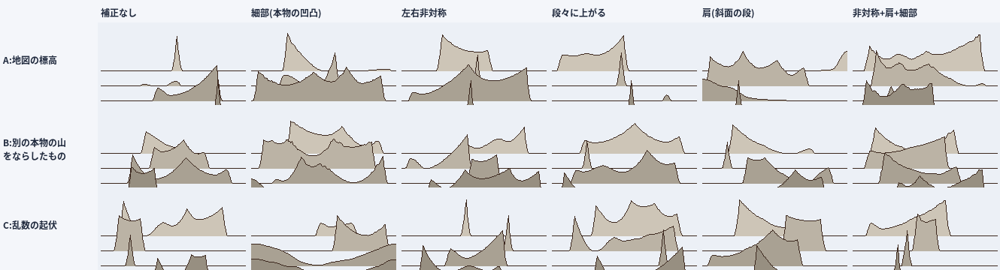

山らしい稜線の実験(絵の描き方の補正の比較)
概要: ユーザー案(2026-11-18)「いくつかの稜線を別のデータから作り、絵の描き方の補正をかけて、より山らしくなるかを実験し、成績の良い手法を使う」を実施しました。「山らしさ」は、本物の山の稜線との統計的な近さ(6つの特徴)で測りました。結果は、近さは12%ほど良くなりましたが、大きくは近づいていません。絵として山らしいかは、下の見本と段階10aで、ご判断ください。
実験の設計
- 元データ(稜線のもと)3種類: A=この地図の標高の線 / B=別の本物の山の線をならしたもの / C=乱数で作った起伏。
- 補正(絵の描き方): 左右非対称(登りは緩く下りは急)/ 段々に上がる / 肩(斜面の途中の段)/ 細部(本物の凹凸)/ 組み合わせ。
- ものさし: 本物の稜線9,041本(21山岳地帯)の6つの特徴(面積の割合、曲がりの強さ、頂点の数、左右の非対称、細かさ、急な斜面の割合)の平均と散らばりに、どれだけ近いか(0に近いほど近い)。
見本(行=元データ、列=補正)

各マスは4枚重ねた稜線の例です。
成績(小さいほど本物に近い)
| 元データ | 補正 | 平均のずれ | 散らばりのずれ |
|---|---|---|---|
| B:別の本物の山をならしたもの | (元の線のまま) | 1.55 | 0.59 |
| B:別の本物の山をならしたもの | 細部(本物の凹凸) | 2.32 | 0.65 |
| B:別の本物の山をならしたもの | 非対称+肩+細部 | 2.33 | 0.72 |
| B:別の本物の山をならしたもの | 肩(斜面の段) | 2.43 | 0.69 |
| B:別の本物の山をならしたもの | 補正なし | 2.54 | 0.68 |
| A:地図の標高 | 非対称+肩+細部 | 2.62 | 0.62 |
| C:乱数の起伏 | 非対称+肩+細部 | 2.53 | 0.74 |
| A:地図の標高 | 細部(本物の凹凸) | 2.69 | 0.58 |
| A:地図の標高 | (元の線のまま) | 2.34 | 0.94 |
| B:別の本物の山をならしたもの | 段々に上がる | 2.61 | 0.67 |
| C:乱数の起伏 | (元の線のまま) | 2.54 | 0.75 |
| C:乱数の起伏 | 細部(本物の凹凸) | 2.58 | 0.70 |
| A:地図の標高 | 肩(斜面の段) | 2.71 | 0.60 |
| C:乱数の起伏 | 肩(斜面の段) | 2.60 | 0.73 |
| B:別の本物の山をならしたもの | 左右非対称 | 2.61 | 0.75 |
| A:地図の標高 | 補正なし | 2.79 | 0.63 |
| C:乱数の起伏 | 補正なし | 2.70 | 0.74 |
| A:地図の標高 | 左右非対称 | 2.79 | 0.66 |
| A:地図の標高 | 段々に上がる | 2.83 | 0.62 |
| C:乱数の起伏 | 段々に上がる | 2.75 | 0.74 |
| C:乱数の起伏 | 左右非対称 | 2.72 | 0.78 |
「(元の線のまま)」は頂点と曲線の処理を行う前の線です。Bの元の線のままが最良なのは、本物の線をならしただけだからで、比較の基準に近い値です。
地図の標高(A)に対する補正の掛け合わせ(64通り)
- 最良: 尖らせの強さを0〜0.3に下げ、「肩+細部」(+左右非対称)を掛けたもの。合計のずれ 3.00。
- 段階8相当(尖らせ最大・補正なし): 3.42。→ 約13%改善。
- 「段々に上がる」は、単独でも組み合わせでも、成績を悪くしました。
- どの組み合わせでも、本物との差は標準の散らばりの2.3倍程度残りました。
最良の補正を地図に適用(段階10a)


限界・未確認
- 「山らしさ」を、人の見た印象ではなく、6つの統計で測りました。統計が良くても、絵として山らしいとは限りません(段階10aの階段状が例です)。
- 本物との差は大きく、特に「曲がりの強さ」(約3倍)と「面積の割合」が残っています。地図の標高の線が、本物より粗くなだらかなためと思われますが、確かめていません。
- 補正の程度(0.3、0.1など)と組み合わせは、64通りの中での最良で、それ以外の補正は試していません。
- 本物の稜線は、21か所の山岳地帯の標高データ(約20km四方の32〜128画素)です。この範囲の山の特徴で、他の山のタイプは含みません。
出典: AWS地形タイル(Mapzen Terrarium)から集めた山の形。標高データそのものは掲載しません。